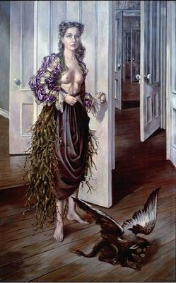

Birthday
Dorothea Tanning · 1942 · Oil on canvas · 40 1/4 × 25 1/2 in. · Philadelphia Museum of Art
In copyright. Look and learn: shown for study, not for download.
Tanning painted this self-portrait in 1942, when she was thirty-one or thirty-two. As she recounts in her memoirs, Max Ernst saw it when he came to her studio to consider her work for an exhibition at Peggy Guggenheim's gallery in New York, and was enchanted by it. The two played chess, fell in love, and married in 1946. In 1986 she gave her first memoir the painting's title.